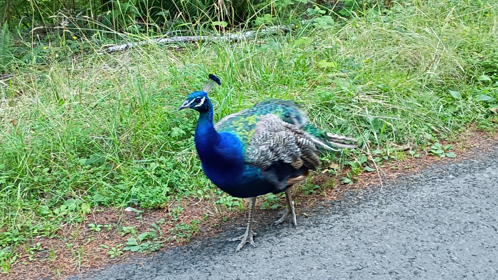
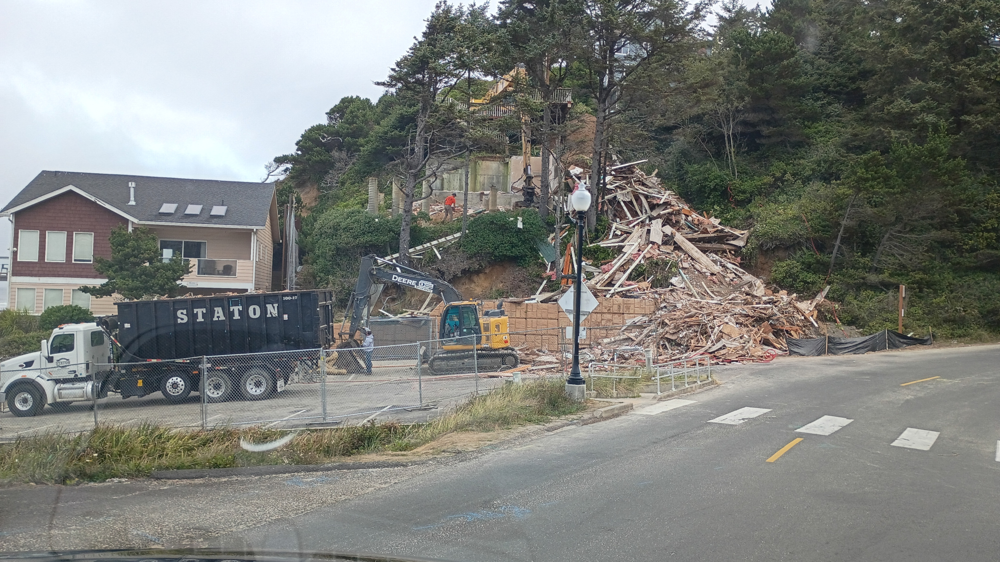

ope...a life serial.15
Nice day. Cool and windy on the coast. Excessive heat warning in the valley for today and tomorrow. Lots of traffic; folk trying to escape the heat. Here's where I turned around right outside of Florence, OR, home of the exploding whale and the inspiration for Herbert's Dune.
Thought I'd celebrate today by riding into the Coastal Range and cracking a rib. Mission accomplished.
Riding off pavement is tough. You have to sit differently. Lean the bike differently. Stand occasionally. Let the motorcycle slip and slide underneath you.
Last week I dropped Mabel four times, every one of them on a little side trail I've nicknamed Matt's Bane.
The good news about dropping a bike off pavement is you're generally going slower than street speeds and gravel and dirt is softer (and less road rashy) than pavement.
The bad news about dropping a bike off pavement is you're generally on a slippery uneven surface which makes footing and leverage a challenge.
I dropped Mabel about half way up a hill climb. Picking up a 458 pound motorcycle on a dirt hill is tricky. Picking her up on the same hill three more times while trying to get down is even trickier. Bruised the arm and leg a bit.
This week I thought I'd go back and try again.
Yeah.
Every time you hear someone say how smart librarians are remember this story.
So I went back down Matt's Bane. Then went back down on Matt's Bane. Made it even less far this time. When I went down my left arm got pinned to my side. I landed on it. Mabel landed on me. I heard a crack.
Job #1? Turn Mabel off. Job #2? Get out from under the 458 pound motorcycle. Job #3? Stay on hands and knees while determining what the crack was. Wrist? OK. Arm? OK. Elbow? OK. Shoulder? OK. Knee? Leg? Ankle? All OK. Clavicle? Okey dokey.
Oh, look at that, breathing hurts. You know, a skosh. Breathing isn't supposed to hurt.
Stay on hands and knees for a couple minutes while I contemplate taking up macramé.
Remember I've never been any good at knots. Drat. Try not to throw up. Check.
Pain isn't sharp. Yay! Breathing mostly okay. Yay! Manage to stand up. Yay! Pick up bike. Yay! Turn bike around on hill without dropping her again. Yay!
I get back to the main trail - cuz fuck Matt's Bane, yo - and decide...yeah...to keep going further instead of turning back home.
Not three minutes later I get to a clearing with a view all the way to the ocean.
This is why I'm riding off pavement!

The pic above was taken with a not-so-great phone. There's Cascade Head on the right. A little to the left is God's Thumb. The thick white(ish) strip along the top of the picture is the sky. The darker gray strip beneath that is the ocean. The thin white strip going from God's thumb across the pic is a fogged in Linclon City. The rest is the Coastal Range.
I also got a video or two that turned out even worse. I hope to get back up there tomorrow after work with a better camera.
Yeah. Tomorrow.
Librarian.
As I sit here in a comfy chair hopped up on Tylenol typing all this out I wonder if riding off pavement is worth it. I mean, I can get pictures and videos that look like this from the pavement for goodness sake.
I'll see if my courage (and pain management) holds for tomorrow.
Yeah no. No off pavement riding for a week or two. Ouch. Gotta let the ribs heal. Stacy and I will be driving up to the viewpoint this evening. Hopefully get a good pic or two.
Think not of the books you've bought as a "to be read" pile. Instead, think of your bookcase as a wine cellar. You collect books to be read at the right time, the right place, and the right mood.
Fog playing in the treetops.
There are library...groupies? Stalkers? I'm not sure what to call them.
I guess I'll go with groupies. Stalkers implies some malevolent intent.
(Though there are library stalkers, too, but this isn't about that.)
I'm not talking about the vast majority of patrons, most of whom are friendly, many of whom are chatty, and almost all of whom are just happy to be in a library. Groupies are different, though still harmless. Well, mostly.
It's like this: I'm in an FOH customer patron service role. I sit at the reference desk eight hours a day, five days a week and help people solve problems without charging them anything for it. It's a great gig. I love that there's no money involved. Since it's a public-facing job I tend to be very patient and optimistic when working with patrons; when someone needs help, yelling and shouting and making them feel stupid for not knowing something is, well, mean and counterproductive.
Because of my demeanor on the job, sometimes patrons get a little...obsessed? They see a nice, helpful guy who knows a little bit about some stuff. The guy tries to put people at ease and lets them know that just because they don't know this one very specific thing it doesn't make them stupid or worthless. There are, very unfortunately, too many people out there who do not experience much positive human interaction and when they see someone fairly consistently offer others that kind of interaction, they want more of it.
That's where things get a bit awkward.
What does 'wanting more of it' look like? They'll spend hours in the library sitting close by, facing you so they can see you interact with others. Oftentimes they'll stare at you for minutes at a time. When you get up from the reference desk they'll intercept you to talk for a brief moment, or, just stand in front of you and wait for you to say something to them. And they'll do it over and over again. Multiple times a day. Multiple days a week.
It doesn't sound like much, but it's exhausting.
The best way I've discovered to counter this? Be as boring as possible. (This comes naturally to me.) Be polite. Don't offer up anything personal. Usually after a week or two (or three or, very occasionally, four) they get bored since they see you aren't this ultra-amazing wonderful super-intelligent person, you're just a working stiff like everybody else trying to do your job to the best of your ability. And yes, every once in a while the same person will come back after a couple of months. For, like, a little top off. When this happens they're usually around for a couple of days and then they're gone again.
A patron is doing a job interview via teleconference on their laptop.
Must resist urge to sneak up behind patron and give them bunny ears.
Two enormous HVAC units sit on pallets outside the library. They'll be installed on the roof tomorrow. Two maintenance workers roll a large cart filled with HVAC parts around the library, looking for a place to stash it for tomorrow's installation.
"Why don't we just put it in there?" asks the first maintenance worker, nodding toward the study rooms. "We'll ask if it's okay."
The second maintenenace worker glances at the study room and hesitates.
The first maintenance worker asks, "Afraid it'll be stolen?"
The second maintenance worker looks to the first maintenance worker and says, "I'm afraid someone will pee on it or something."
This is what living 100 meters from the Pacific Ocean does to everything you own.

Groovy. Stacy and I got into the acknowledgments for Keith Rosson's, The Devil by Name, which was a corker of a read.


Many whales die by drowning. Maybe whales who beach themselves fear drowning.
The perils of building your house on a cliff overlooking the ocean. What once was this is now this:

Beloved library cat has passed away
It is with heavy hearts that we inform you of the passing of Browser, the beloved library cat. Browser passed away peacefully of natural causes. He was one month shy of sixteen years old. In 2010, the Library staff was inspired by the story of Dewey Readmore Books, an Iowa library cat who had a book written about him, and adopted Browser to be a library cat when he was just 1 year old. Browser spent fifteen years of his life at the White Settlement Public Library and was one of their longest tenured employees. Browser brought delight to patrons and employees over the past decade and a half with his playful and curious nature, often cozying up to people while they read and worked. Some of his favorite activities included riding the book return cart while employees returned books to the shelves, stealing the Library Manager’s seat any time she got up, watching bird videos, and hanging with the crafting club any time they met. Browser sat in on so many GED classes at the library that the teacher eventually awarded him an honorary GED. On behalf of the entire Library staff past and present, we would like to thank all who went out of their way to visit Browser, play with him, and remind him how good of a boy he was. He lived a full and joyful life that was filled with friends.
The most riveting 9 minutes of scifi filmdom you'll see this year. By Caroline Klidonas.
A patron told me all people resemble flowers. Evidently I'm a daisy.

Imagine E.T.'s glowing finger reaching out while saying, "Ouch."